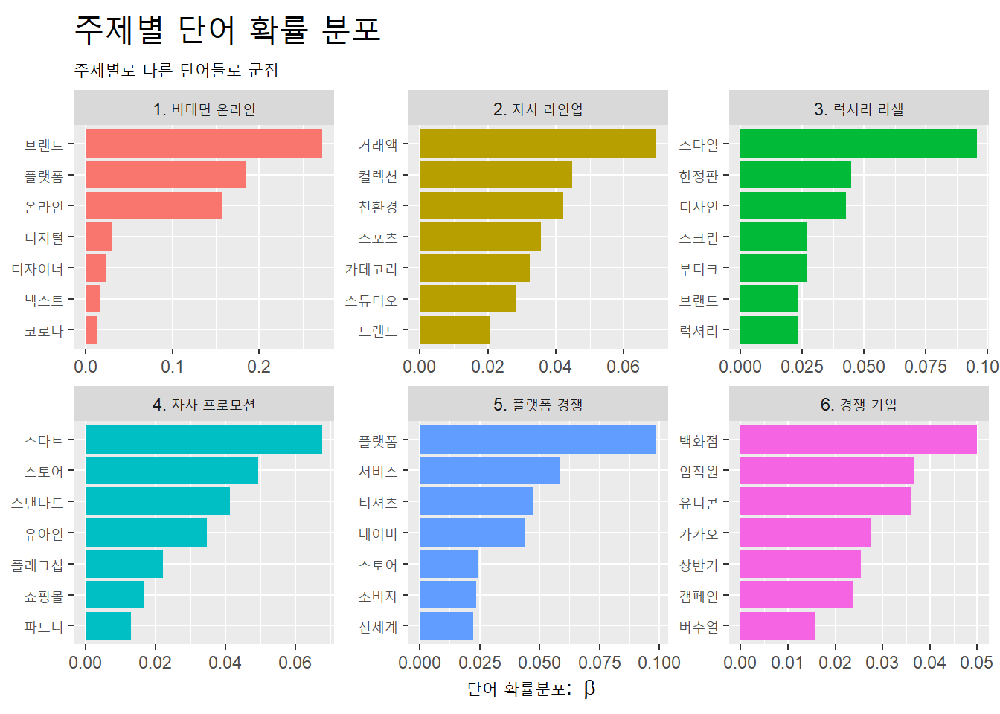
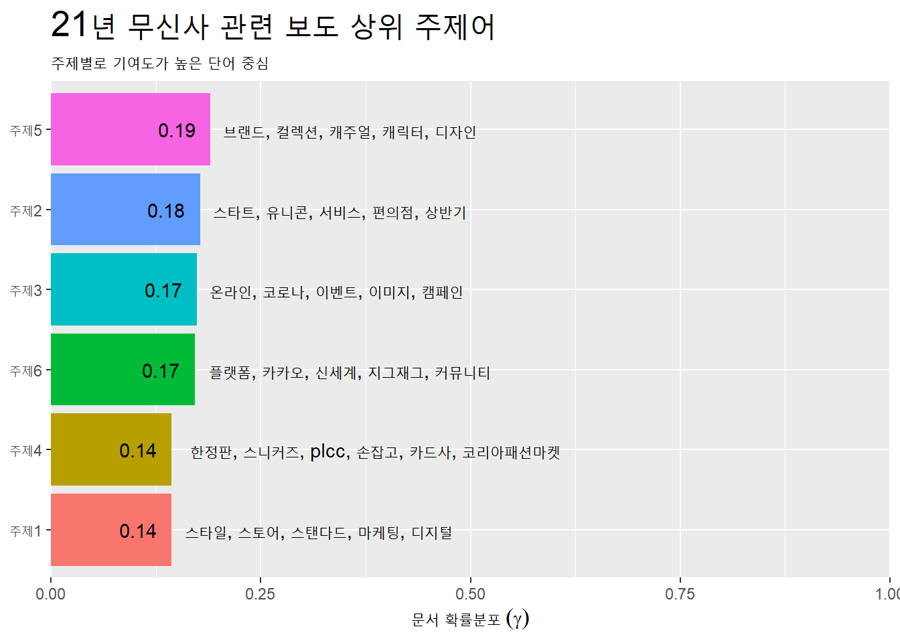
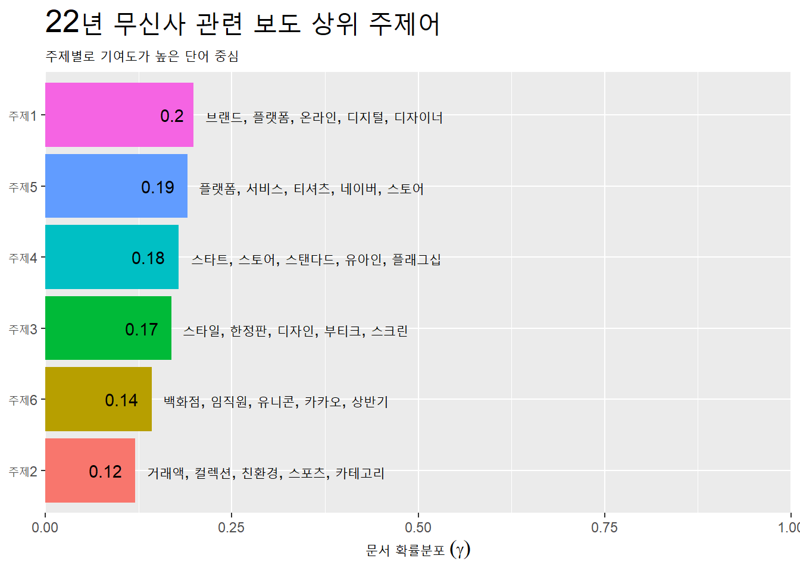

Building corpus...
Converting to Lower Case...
Removing punctuation...
Removing stopwords...
Removing numbers...
Stemming...
Creating Output...
Code
out <-prepDocuments(processed$documents, processed$vocab, processed$meta, lower.thresh =1)
Removing 2921 of 4511 terms (2921 of 13983 tokens) due to frequency
Removing 2 Documents with No Words
Your corpus now has 1397 documents, 1590 terms and 11062 tokens.
Code
docs <- out$documentsvocab <- out$vocabmeta <- out$metatopicN <-c(3, 10)#storage <- searchK(out$documents, out$vocab, K = topicN)musinsa_21year_stm_fit <-stm(documents = docs,vocab = vocab,K =6,data = meta,init.type ="Spectral",seed =25,verbose = F )musinsa_21year_td_beta <- musinsa_21year_stm_fit %>%tidy(matrix ='beta') #labelTopics(musinsa_stm_fit)musinsa_21year_topic_name <-tibble(topic =1:6,name =c("1. 자사 마케팅","2. 기업 경영","3. 비대면 시장","4. 시장 동향","5. 패션 카테고리","6. 경쟁 기업") )musinsa_21year_term_topic_name <-musinsa_21year_td_beta %>%group_by(topic) %>%slice_max(beta, n =7) %>%left_join(musinsa_21year_topic_name, by ="topic")musinsa_21year_term_topic_name %>%ggplot(aes(x = beta, y =reorder_within(term, beta, name),fill = name)) +geom_col(show.legend = F) +facet_wrap(~name, scales ="free") +scale_y_reordered() +labs(x =expression("단어 확률분포: "~beta), y =NULL,title ="주제별 단어 확률 분포",subtitle ="주제별로 다른 단어들로 군집") +theme(plot.title =element_text(size =20))
Building corpus...
Converting to Lower Case...
Removing punctuation...
Removing stopwords...
Removing numbers...
Stemming...
Creating Output...
Code
out <-prepDocuments(processed$documents, processed$vocab, processed$meta, lower.thresh =1)
Removing 3155 of 4866 terms (3155 of 15160 tokens) due to frequency
Removing 5 Documents with No Words
Your corpus now has 1571 documents, 1711 terms and 12005 tokens.
Code
docs <- out$documentsvocab <- out$vocabmeta <- out$metatopicN <-c(3, 10)#storage <- searchK(out$documents, out$vocab, K = topicN)musinsa_22year_stm_fit <-stm(documents = docs,vocab = vocab,K =6,data = meta,init.type ="Spectral",seed =25,verbose = F )musinsa_22year_td_beta <- musinsa_22year_stm_fit %>%tidy(matrix ='beta') #labelTopics(musinsa_stm_fit)musinsa_22year_topic_name <-tibble(topic =1:6,name =c("1. 비대면 온라인","2. 자사 라인업","3. 럭셔리 리셀","4. 자사 프로모션","5. 플랫폼 경쟁","6. 경쟁 기업") )musinsa_22year_term_topic_name <-musinsa_22year_td_beta %>%group_by(topic) %>%slice_max(beta, n =7) %>%left_join(musinsa_22year_topic_name, by ="topic")musinsa_22year_term_topic_name %>%ggplot(aes(x = beta, y =reorder_within(term, beta, name),fill = name)) +geom_col(show.legend = F) +facet_wrap(~name, scales ="free") +scale_y_reordered() +labs(x =expression("단어 확률분포: "~beta), y =NULL,title ="주제별 단어 확률 분포",subtitle ="주제별로 다른 단어들로 군집") +theme(plot.title =element_text(size =20))

자사 라인업과 경쟁 기업에서 군집화가 잘 이루어짐.
7. 관련 보도 상위 주제어
a. 관련 보도 상위 주제어 / 21년 무신사
Code
musinsa_21year_td_gamma <- musinsa_21year_stm_fit %>%tidy(matrix ="gamma") musinsa_21year_top_terms <-musinsa_21year_td_beta %>%group_by(topic) %>%slice_max(beta, n =5) %>%select(topic, term) %>%summarise(terms =str_flatten(term, collapse =", ")) musinsa_21year_gamma_terms <-musinsa_21year_td_gamma %>%group_by(topic) %>%summarise(gamma =mean(gamma)) %>%left_join(musinsa_21year_top_terms, by ='topic') %>%mutate(topic =str_c("주제", topic),topic =reorder(topic, gamma))musinsa_21year_gamma_terms %>%ggplot(aes(x = gamma, y = topic, fill = topic)) +geom_col(show.legend = F) +geom_text(aes(label =round(gamma, 2)),hjust =1.4) +geom_text(aes(label = terms), hjust =-0.05) +scale_x_continuous(expand =c(0, 0),limit =c(0, 1)) +labs(x =expression("문서 확률분포"~(gamma)), y =NULL,title ="21년 무신사 관련 보도 상위 주제어",subtitle ="주제별로 기여도가 높은 단어 중심") +theme(plot.title =element_text(size =20))

무신사에서 판매중인 브랜드와 디자인, 컬렉션과 같이 의류 관련 기사가 자주 보도됨. 스타트, 유니콘 키워드로 기업 성장을 주목하고 있으며, 카카오, 신세계, 지그재그와 비교해 매출 증대를 조명하는 내용이 자주 언급되고 있음.
b. 관련 보도 상위 주제어 / 22년 무신사
Code
musinsa_22year_td_gamma <- musinsa_22year_stm_fit %>%tidy(matrix ="gamma") musinsa_22year_top_terms <-musinsa_22year_td_beta %>%group_by(topic) %>%slice_max(beta, n =5) %>%select(topic, term) %>%summarise(terms =str_flatten(term, collapse =", ")) musinsa_22year_gamma_terms <-musinsa_22year_td_gamma %>%group_by(topic) %>%summarise(gamma =mean(gamma)) %>%left_join(musinsa_22year_top_terms, by ='topic') %>%mutate(topic =str_c("주제", topic),topic =reorder(topic, gamma))musinsa_22year_gamma_terms %>%ggplot(aes(x = gamma, y = topic, fill = topic)) +geom_col(show.legend = F) +geom_text(aes(label =round(gamma, 2)),hjust =1.4) +geom_text(aes(label = terms), hjust =-0.05) +scale_x_continuous(expand =c(0, 0),limit =c(0, 1)) +labs(x =expression("문서 확률분포"~(gamma)), y =NULL,title ="22년 무신사 관련 보도 상위 주제어",subtitle ="주제별로 기여도가 높은 단어 중심") +theme(plot.title =element_text(size =20))

21년 보다 펜데믹으로 인한 플랫폼, 온라인과 같은 비대면 서비스가 상대적으로 자주 언급됨. 공격적인 프로모션을 진행함에 따라 스토어, 스탠다드, 유아인 등 무신사의 자사 브랜드 관련 키워드가 잘 언급되고 있음.
8. 결론
a. 차이점
21년에는 타 기업과 콜라보에 관련된 기사가 많았음. 또한 성차별 논란이 크게 언급되며 기업 이미지 차원에서 위기를 맞이함. 22년에는 펜데믹으로 인한 비대면 시장 활성화, 자사 브랜드 런칭에 관한 기사가 주를 이룸. 다만 가품 논란으로 브랜드 신뢰도에 타격을 입은 모습을 확인할 수 있음.
b. 전략
대체적으로 무신사의 프로모션 소식, 브랜드 런칭 등 자사에 긍정적인 방향으로 기사가 전개되고 있었음. 그러나 이슈가 발생하면 파급력이 굉장히 커지고, 기업 이미지에 심각한 타격을 입는 모습을 보였기 때문에 기업 PR 차원에서 전략적인 관리가 필요할 것으로 보임.
Source Code
---title: "Year"author: 언론홍보학과 2021202027 최성진date: 2022-10-12code-fold: truecode-tools: true---### 분석 이유> **무신사**는 국내 최대 온라인 의류 아울렛 플랫폼으로 최근 유명 모델 기용, 대기업과 협업, 오프라인 스토어 런칭 등 공격적 행보를 보이고 있다. 무신사가 큰 폭으로 성장한 21년과 22년에 발행된 기사를 비교 분석하여 **차이점**과 앞으로의 **전략**을 분석, 제안하고자 한다.### 목차1. 자료 수집 a) 빅카인즈 데이터셋 수집2. 자료 분석 a) 총빈도 / 21년 무신사 b) 총빈도 / 22년 무신사3. 상대빈도4. 감정 분석 a) 감정 분석 / 21년 무신사 b) 감정 분석 / 22년 무신사5. 긍정어 부정어 분석 a) 긍정어 부정어 분석 / 21년 무신사 b) 긍정어 부정어 분석 / 22년 무신사6. 토픽 모델링 a) 토픽 모델링 / 21년 무신사 b) 토픽 모델링 / 22년 무신사7. 관련 보도 상위 주제어 a) 관련 보도 상위 주제어 / 21년 무신사 b) 관련 보도 상위 주제어 / 22년 무신사8. 결론 a) 차별점 b) 전략### 1. 자료 수집##### a. 빅카인즈 데이터셋 수집```{r}#| label: data_ready#| results: hide#| include: falsepkg_v <-c("tidyverse", "tidytext", "readxl", "kableExtra", "multilinguer", "RcppMeCab", "KoNLP", "lubridate", "tidylo", "stm", "reshape2", "dplyr", "ggplot2", "stringr", "rvest", "wordcloud", "gt")# 패키지 설치 시 사용#( pkg_v_installed <- pkg_v %in% installed.packages()[,"Package"] )#( new_pkg <- pkg_v[!pkg_v_installed] )#if(length(new_pkg)) install.packages(new_pkg)lapply(pkg_v, require, ch = T)musinsa_21year_df <-readxl::read_excel("data/NewsResult_20210101-20211004_musinsa.xlsx") %>%select(일자, 제목, 본문, cat =`통합 분류1`) musinsa_22year_df <-readxl::read_excel("data/NewsResult_20220101-20221004_musinsa.xlsx") %>%select(일자, 제목, 본문, cat =`통합 분류1`) ```> 2021.01.01 - 2021.10.04 간 1,413건, 2022.01.01 - 2022.10.04 간 1,597건 확보.### 2. 자료 분석##### a. 총빈도 / 무신사 21년```{r}#| label: musinsa_21year_all#| echo: true#| warning: false# "무신사"가 "무신 + 사"로 반영되어 사전에 "무신사" 추가#buildDictionary(ext_dic = c('sejong', 'woorimalsam'),# user_dic = data.frame(term="역직구", tag='ncn'),# category_dic_nms=c('brand'))musinsa_21year2_df <-musinsa_21year_df %>%distinct(제목, .keep_all = T) %>%mutate(ID =factor(row_number())) %>%mutate(label ="0") %>%unite(제목, 본문, col ="text", sep =" ") %>%mutate(text =str_squish(text))musinsa_21year_tk <- musinsa_21year2_df %>%mutate(text =str_remove_all(text, "[^(\\w+|\\s)]")) %>%unnest_tokens(word, text, token = extractNoun, drop = F) %>%# separate(word, c("word", "pos"), sep = "/") %>% # filter(pos == "nng") %>% count(word, sort = T)musinsa_21year_tk <-musinsa_21year_tk %>%filter(!word %in%c("무신사", "MUSINSA", "기자")) %>%filter(str_detect(word, "[:alpha:]+"))musinsa_21year_tk %>%filter(str_length(word) >1) %>%slice_max(n, n =15) %>%mutate(word =reorder(word, n)) %>%ggplot(aes(word, n)) +geom_col() +coord_flip() +labs(title ="21년 무신사 총빈도")```> 기업과 관련된 **패션, 브랜드, 온라인** 키워드가 자주 언급되었으며, **투자, 카드, 시장**과 같이 사업적 측면이 두드러짐. 성차별과 제스처에 관련된 사건이 **논란** 키워드를 통해 부정적으로 언급됨.##### b. 총빈도 / 무신사 22년```{r}#| label: musinsa_22year_all#| echo: true#| warning: falsemusinsa_22year2_df <-musinsa_22year_df %>%distinct(제목, .keep_all = T) %>%mutate(ID =factor(row_number())) %>%mutate(label ="1") %>%unite(제목, 본문, col ="text", sep =" ") %>%mutate(text =str_squish(text))musinsa_22year_tk <- musinsa_22year2_df %>%mutate(text =str_remove_all(text, "[^(\\w+|\\s)]")) %>%unnest_tokens(word, text, token = extractNoun, drop = F) %>%count(word, sort = T)musinsa_22year_tk <-musinsa_22year_tk %>%filter(!word %in%c("무신사", "MUSINSA", "기자")) %>%filter(str_detect(word, "[:alpha:]+"))musinsa_22year_tk %>%filter(str_length(word) >1) %>%slice_max(n, n =15) %>%mutate(word =reorder(word, n)) %>%ggplot(aes(word, n)) +geom_col() +coord_flip() +labs(title ="22년 무신사 총빈도")```> 21년도와 동일하게 기업과 관련된 **패션, 브랜드, 플랫폼**과 같은 키워드가 잘 언급되고 있었으며, 오프라인 샵 개설에 따른 **서울, 국내**와 고가품 플랫폼 런칭으로 **명품**이 새로 언급되기 시작함.### 3. 상대빈도```{r}#| label: vs#| echo: true#| warning: falsevs_df <-rbind(musinsa_21year2_df, musinsa_22year2_df)set.seed(15)vsvs_df <- vs_df[-c(1, 3)] %>%relocate(c(ID, text)) %>%group_by(label) %>%sample_n(size =1400)rate_odds_df <-vsvs_df %>%unnest_tokens(word, text, token = extractNoun) %>%# separate(word, c("word", "pos"), sep = "/") %>% # filter(pos == "nng") %>% count(word) %>%pivot_wider(names_from = label,values_from = n, values_fill =list(n =0)) %>%rename(posi =`1`, nega =`0`) %>%mutate(odds_posi = ((posi+1)/sum(posi+1)),odds_nega = ((nega+1)/sum(nega+1))) %>%mutate(posi_odds_ratio = (odds_posi / odds_nega)) %>%filter(rank(posi_odds_ratio) <=20|rank(-posi_odds_ratio) <=20) %>%arrange(-posi_odds_ratio)rate_log_df <-vsvs_df %>%unnest_tokens(word, text, token = extractNoun) %>%# separate(word, c("word", "pos"), sep = "/") %>% # filter(pos == "nng") %>% count(word) %>%pivot_wider(names_from = label,values_from = n, values_fill =list(n =0)) %>%rename(posi =`1`, nega =`0`) %>%mutate(odds_posi = ((posi+1)/sum(posi+1)),odds_nega = ((nega+1)/sum(nega+1))) %>%mutate(log_odds_ratio =log(odds_posi / odds_nega)) weighted_log_odds_df <-vsvs_df %>%unnest_tokens(word, text, token = extractNoun) %>%# separate(word, c("word", "pos"), sep = "/") %>% # filter(pos == "nng") %>% filter(str_length(word) >1) %>%filter(word !="무신사") %>%filter(word !="fn") %>%filter(word !="기자") %>%filter(word !="파이낸셜") %>%filter(word !="[헤럴드경제=이정아") %>%count(word) %>%bind_log_odds(set = label,feature = word,n = n) %>%arrange(-log_odds_weighted)weighted_log_odds_df %>%group_by(label =ifelse(label >0, "22년 무신사", "21년 무신사")) %>%slice_max(abs(log_odds_weighted), n =10) %>%ggplot(aes(x = log_odds_weighted,y =reorder(word, log_odds_weighted),fill = label)) +geom_col(show.legend = F) +facet_wrap(~label, scale ="free")```> 21년에는 콜라보와 관련된 **참이슬, GS25**와 논란에 따른 **손가락, 포스터, 실망**이 상대적으로 자주 언급되었으며, 22년에는 주식 무상 증여에 따른 **증여, 무상**과 짝퉁 논란에 대한 **가품, 피어** 키워드가 자주 언급되었음.### 4. 감정 분석##### a. 감정 분석 / 21년 무신사```{r}#| label: musinsa_21year_senti#| echo: true#| warning: false# "knusenti" 설치 코드#url_v <- "https://github.com/park1200656/KnuSentiLex/archive/refs/heads/master.zip"#dest_v <- "data/knusenti.zip"#download.file(url = url_v, # destfile = dest_v,# mode = "wb")#unzip("knusenti.zip", exdir = "data")senti_name_v <-list.files("data/KnuSentiLex-master/.")[9]senti_dic_df <-read_tsv(str_c("data/KnuSentiLex-master/", senti_name_v), col_names = F)senti_dic_df <- senti_dic_df %>%rename(word = X1, sScore = X2)knu_dic_df <- senti_dic_df %>%filter(!is.na(sScore))musinsa_21year_senti_df <- musinsa_21year2_df %>%unnest_tokens(word, text, token = extractNoun) %>%inner_join(knu_dic_df) %>%count(word, sScore, sort = T) %>%filter(str_length(word) >1) %>%filter(!word %in%c("대상")) %>%mutate(word =reorder(word, n)) %>%slice_head(n =20)musinsa_21year_senti_df %>%ggplot() +geom_col(aes(n, word, fill = sScore), show.legend = F) +labs(title ="21년 무신사 감정빈도 분석")```> 프로모션에 대한 **할인, 인기, 이벤트, 혜택**과 같은 키워드가 긍정어로 자주 언급됨. 부정어로는 성차별과 제스처 논란으로 **혐오, 실망**이 자주 언급된 것을 확인할 수 있었음.##### b. 감정 분석 / 22년 무신사```{r}#| label: musinsa_22year_senti#| echo: true#| warning: falsemusinsa_22year_senti_df <- musinsa_22year2_df %>%unnest_tokens(word, text, token = extractNoun) %>%inner_join(knu_dic_df) %>%count(word, sScore, sort = T) %>%filter(str_length(word) >1) %>%filter(!word %in%c("대상")) %>%mutate(word =reorder(word, n)) %>%slice_head(n =20)musinsa_22year_senti_df %>%ggplot() +geom_col(aes(n, word, fill = sScore), show.legend = F) +labs(title ="22년 무신사 감정빈도 분석")```> 21년과 동일하게 프로모션에 대한 **인기, 할인** 키워드가 긍정어로 수집되었으며, 부정어로 가품 논란에 따른 **부담, 개선** 키워드가 자주 언급되는 모습을 보임.### 5. 긍정어 부정어 분석##### a. 긍정어 부정어 분석 / 21년 무신사```{r}#| label: musinsa_21year_pone#| echo: true#| warning: falsemusinsa_21year2_df %>%unnest_tokens(word, text) %>%left_join(knu_dic_df) %>%mutate(sScore =ifelse(sScore >=1, "긍정",ifelse(sScore <=-1, "부정", "중립"))) %>%count(sScore) %>%gt() %>%tab_header(title ="21년 무신사",subtitle ="긍정어 부정어 점수")# 워드클라우드musinsa_21year2_df %>%unnest_tokens(word, text) %>%inner_join(knu_dic_df) %>%mutate(emotion =ifelse(sScore >0, "긍정", ifelse(sScore <0, "부정", "중립"))) %>%filter(emotion !="중립") %>%count(word, emotion, sort = T) %>%filter(str_length(word) >1) %>%filter(!word %in%c("대상")) %>% reshape2::acast(word ~ emotion, value.var ="n", fill =0) %>%comparison.cloud(colors =c("blue", "red"), max.words =50)musinsa_21year2_df %>%unnest_tokens(word, text, token = extractNoun) %>%inner_join(knu_dic_df) %>%mutate(emotion =ifelse(sScore >0, "긍정", ifelse(sScore <0, "부정", "중립"))) %>%mutate(label =ifelse(sScore >0, "1", ifelse(sScore <0, "0", "2"))) %>%filter(label !="중립") %>%count(word, emotion, label, sort = T) %>%filter(str_length(word) >1) %>%filter(!word %in%c("대상")) %>%group_by(label =ifelse(label >0, "긍정", "부정")) %>%slice_head(n =15) %>%ggplot(aes(x = n,y =reorder(word, n), fill = label)) +geom_col(show.legend = F) +facet_wrap(~label, scale ="free") +labs(title ="21년 무신사 긍정어 부정어")```> 4.5:1 로 긍정어 점수가 높은 편. 프로모션과 관련된 **할인, 인기, 이벤트**와 같은 키워드가 긍정어로 분석되었으며, 성차별과 제스처 논란에 따른 **혐오, 실망, 비난** 키워드가 부정어로 분석됨.##### b. 긍정어 부정어 분석 / 22년 무신사```{r}#| label: musinsa_22year_pone#| echo: true#| warning: falsemusinsa_22year2_df %>%unnest_tokens(word, text) %>%left_join(knu_dic_df) %>%mutate(sScore =ifelse(sScore >=1, "긍정",ifelse(sScore <=-1, "부정", "중립"))) %>%count(sScore) %>%gt() %>%tab_header(title ="22년 무신사",subtitle ="긍정어 부정어 점수")# 워드클라우드musinsa_22year2_df %>%unnest_tokens(word, text) %>%inner_join(knu_dic_df) %>%mutate(emotion =ifelse(sScore >0, "긍정", ifelse(sScore <0, "부정", "중립"))) %>%filter(emotion !="중립") %>%count(word, emotion, sort = T) %>%filter(str_length(word) >1) %>%filter(!word %in%c("대상")) %>% reshape2::acast(word ~ emotion, value.var ="n", fill =0) %>%comparison.cloud(colors =c("blue", "red"), max.words =50)musinsa_22year2_df %>%unnest_tokens(word, text, token = extractNoun) %>%inner_join(knu_dic_df) %>%mutate(emotion =ifelse(sScore >0, "긍정", ifelse(sScore <0, "부정", "중립"))) %>%mutate(label =ifelse(sScore >0, "1", ifelse(sScore <0, "0", "2"))) %>%filter(label !="중립") %>%count(word, emotion, label, sort = T) %>%filter(str_length(word) >1) %>%filter(!word %in%c("대상")) %>%group_by(label =ifelse(label >0, "긍정", "부정")) %>%slice_head(n =15) %>%ggplot(aes(x = n,y =reorder(word, n), fill = label)) +geom_col(show.legend = F) +facet_wrap(~label, scale ="free") +labs(title ="22년 무신사 긍정어 부정어")```> 4.2:1 로 21년 보다 긍정어 점수 비율이 낮아짐. 전년과 동일하게 **인기, 할인** 키워드가 긍정어 상위를 차지했으며, 가품 논란에 따른 **부담, 위축, 가짜**가 부정어로 자주 언급되는 모습을 보임.### 6. 토픽 모델링##### a. 주제별 단어 확률 분포 / 21년 무신사```{r}#| label: musinsa_21year_topic#| echo: true#| warning: falsemusinsa_21year_topic_tk <- musinsa_21year2_df %>%mutate(text =str_remove_all(text, "[^(\\w+|\\s)]")) %>%unnest_tokens(word, text, token = extractNoun, drop = F)musinsa_21year_topic_tk <-musinsa_21year_topic_tk %>%filter(!word %in%c("무신사", "MUSINSA", "기자", "대상","투데이", "글로벌", "지난달", "지난해","가운데")) %>%filter(str_detect(word, "[:alpha:]+"))musinsa_21year_combined_df <- musinsa_21year_topic_tk %>%group_by(ID) %>%summarise(text2 =str_flatten(word, " ")) %>%ungroup() %>%inner_join(musinsa_21year2_df, by ="ID")processed <- musinsa_21year2_df %>%textProcessor(documents = musinsa_21year_combined_df$text2,metadata = ., )out <-prepDocuments(processed$documents, processed$vocab, processed$meta, lower.thresh =1)docs <- out$documentsvocab <- out$vocabmeta <- out$metatopicN <-c(3, 10)#storage <- searchK(out$documents, out$vocab, K = topicN)musinsa_21year_stm_fit <-stm(documents = docs,vocab = vocab,K =6,data = meta,init.type ="Spectral",seed =25,verbose = F )musinsa_21year_td_beta <- musinsa_21year_stm_fit %>%tidy(matrix ='beta') #labelTopics(musinsa_stm_fit)musinsa_21year_topic_name <-tibble(topic =1:6,name =c("1. 자사 마케팅","2. 기업 경영","3. 비대면 시장","4. 시장 동향","5. 패션 카테고리","6. 경쟁 기업") )musinsa_21year_term_topic_name <-musinsa_21year_td_beta %>%group_by(topic) %>%slice_max(beta, n =7) %>%left_join(musinsa_21year_topic_name, by ="topic")musinsa_21year_term_topic_name %>%ggplot(aes(x = beta, y =reorder_within(term, beta, name),fill = name)) +geom_col(show.legend = F) +facet_wrap(~name, scales ="free") +scale_y_reordered() +labs(x =expression("단어 확률분포: "~beta), y =NULL,title ="주제별 단어 확률 분포",subtitle ="주제별로 다른 단어들로 군집") +theme(plot.title =element_text(size =20))```> **자사 마케팅**과 **시장 동향**에서 군집화가 잘 이루어짐.##### b. 주제별 단어 확률 분포 / 22년 무신사```{r}#| label: musinsa_22year_topic#| echo: true#| warning: falsemusinsa_22year_topic_tk <- musinsa_22year2_df %>%mutate(text =str_remove_all(text, "[^(\\w+|\\s)]")) %>%unnest_tokens(word, text, token = extractNoun, drop = F)musinsa_22year_topic_tk <-musinsa_22year_topic_tk %>%filter(!word %in%c("무신사", "MUSINSA", "기자", "대상","투데이", "글로벌", "지난달", "지난해","가운데", "헤럴드경제이정아")) %>%filter(str_detect(word, "[:alpha:]+"))musinsa_22year_combined_df <- musinsa_22year_topic_tk %>%group_by(ID) %>%summarise(text2 =str_flatten(word, " ")) %>%ungroup() %>%inner_join(musinsa_22year2_df, by ="ID")processed <- musinsa_22year2_df %>%textProcessor(documents = musinsa_22year_combined_df$text2,metadata = ., )out <-prepDocuments(processed$documents, processed$vocab, processed$meta, lower.thresh =1)docs <- out$documentsvocab <- out$vocabmeta <- out$metatopicN <-c(3, 10)#storage <- searchK(out$documents, out$vocab, K = topicN)musinsa_22year_stm_fit <-stm(documents = docs,vocab = vocab,K =6,data = meta,init.type ="Spectral",seed =25,verbose = F )musinsa_22year_td_beta <- musinsa_22year_stm_fit %>%tidy(matrix ='beta') #labelTopics(musinsa_stm_fit)musinsa_22year_topic_name <-tibble(topic =1:6,name =c("1. 비대면 온라인","2. 자사 라인업","3. 럭셔리 리셀","4. 자사 프로모션","5. 플랫폼 경쟁","6. 경쟁 기업") )musinsa_22year_term_topic_name <-musinsa_22year_td_beta %>%group_by(topic) %>%slice_max(beta, n =7) %>%left_join(musinsa_22year_topic_name, by ="topic")musinsa_22year_term_topic_name %>%ggplot(aes(x = beta, y =reorder_within(term, beta, name),fill = name)) +geom_col(show.legend = F) +facet_wrap(~name, scales ="free") +scale_y_reordered() +labs(x =expression("단어 확률분포: "~beta), y =NULL,title ="주제별 단어 확률 분포",subtitle ="주제별로 다른 단어들로 군집") +theme(plot.title =element_text(size =20))```> **자사 라인업**과 **경쟁 기업**에서 군집화가 잘 이루어짐.### 7. 관련 보도 상위 주제어##### a. 관련 보도 상위 주제어 / 21년 무신사```{r}#| label: musinsa_21year_word#| echo: true#| warning: falsemusinsa_21year_td_gamma <- musinsa_21year_stm_fit %>%tidy(matrix ="gamma") musinsa_21year_top_terms <-musinsa_21year_td_beta %>%group_by(topic) %>%slice_max(beta, n =5) %>%select(topic, term) %>%summarise(terms =str_flatten(term, collapse =", ")) musinsa_21year_gamma_terms <-musinsa_21year_td_gamma %>%group_by(topic) %>%summarise(gamma =mean(gamma)) %>%left_join(musinsa_21year_top_terms, by ='topic') %>%mutate(topic =str_c("주제", topic),topic =reorder(topic, gamma))musinsa_21year_gamma_terms %>%ggplot(aes(x = gamma, y = topic, fill = topic)) +geom_col(show.legend = F) +geom_text(aes(label =round(gamma, 2)),hjust =1.4) +geom_text(aes(label = terms), hjust =-0.05) +scale_x_continuous(expand =c(0, 0),limit =c(0, 1)) +labs(x =expression("문서 확률분포"~(gamma)), y =NULL,title ="21년 무신사 관련 보도 상위 주제어",subtitle ="주제별로 기여도가 높은 단어 중심") +theme(plot.title =element_text(size =20))```> 무신사에서 판매중인 **브랜드**와 **디자인, 컬렉션**과 같이 의류 관련 기사가 자주 보도됨. **스타트, 유니콘** 키워드로 기업 성장을 주목하고 있으며, **카카오, 신세계, 지그재그**와 비교해 매출 증대를 조명하는 내용이 자주 언급되고 있음.##### b. 관련 보도 상위 주제어 / 22년 무신사```{r}#| label: musinsa_22year_word#| echo: true#| warning: falsemusinsa_22year_td_gamma <- musinsa_22year_stm_fit %>%tidy(matrix ="gamma") musinsa_22year_top_terms <-musinsa_22year_td_beta %>%group_by(topic) %>%slice_max(beta, n =5) %>%select(topic, term) %>%summarise(terms =str_flatten(term, collapse =", ")) musinsa_22year_gamma_terms <-musinsa_22year_td_gamma %>%group_by(topic) %>%summarise(gamma =mean(gamma)) %>%left_join(musinsa_22year_top_terms, by ='topic') %>%mutate(topic =str_c("주제", topic),topic =reorder(topic, gamma))musinsa_22year_gamma_terms %>%ggplot(aes(x = gamma, y = topic, fill = topic)) +geom_col(show.legend = F) +geom_text(aes(label =round(gamma, 2)),hjust =1.4) +geom_text(aes(label = terms), hjust =-0.05) +scale_x_continuous(expand =c(0, 0),limit =c(0, 1)) +labs(x =expression("문서 확률분포"~(gamma)), y =NULL,title ="22년 무신사 관련 보도 상위 주제어",subtitle ="주제별로 기여도가 높은 단어 중심") +theme(plot.title =element_text(size =20))```> 21년 보다 펜데믹으로 인한 **플랫폼, 온라인**과 같은 비대면 서비스가 상대적으로 자주 언급됨. 공격적인 프로모션을 진행함에 따라 **스토어, 스탠다드, 유아인** 등 무신사의 자사 브랜드 관련 키워드가 잘 언급되고 있음. ### 8. 결론##### a. 차이점> 21년에는 타 기업과 **콜라보**에 관련된 기사가 많았음. 또한 **성차별 논란**이 크게 언급되며 기업 이미지 차원에서 위기를 맞이함. 22년에는 펜데믹으로 인한 **비대면 시장** 활성화, **자사 브랜드** 런칭에 관한 기사가 주를 이룸. 다만 **가품 논란**으로 브랜드 신뢰도에 타격을 입은 모습을 확인할 수 있음.##### b. 전략> 대체적으로 무신사의 프로모션 소식, 브랜드 런칭 등 자사에 **긍정적인 방향**으로 기사가 전개되고 있었음. 그러나 **이슈**가 발생하면 파급력이 굉장히 커지고, 기업 이미지에 심각한 타격을 입는 모습을 보였기 때문에 **기업 PR 차원**에서 전략적인 관리가 필요할 것으로 보임.